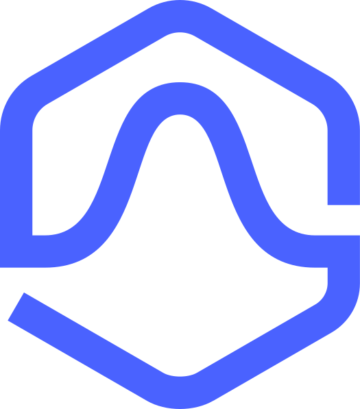
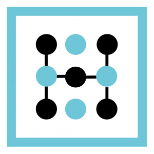
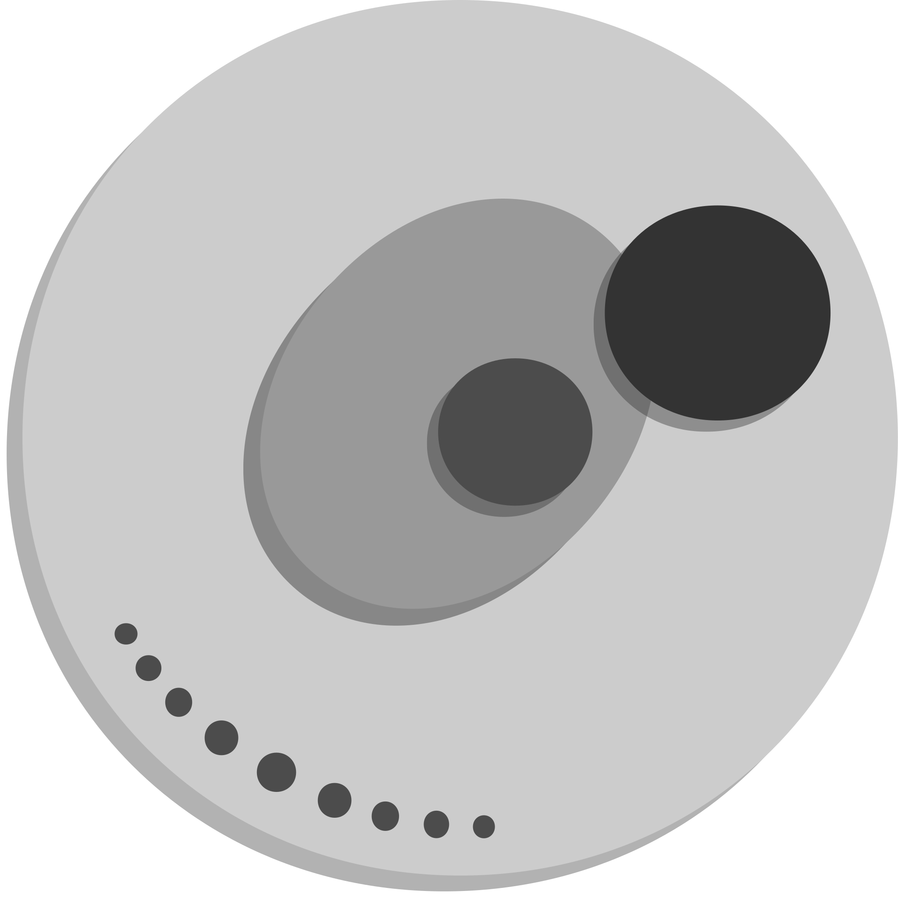

Adrian Castro
Backend Tech Lead at Specter · Distributed systems, data platforms, APIs
Based in München, Germany | Italian (C2), Spanish (C2), English (C1), German (B1), French (A2), Portuguese (A2)Adrian Castro
Backend Tech Lead at Specter · Distributed systems, data platforms, APIs
Based in München, Germany | Italian (C2), Spanish (C2), English (C1), German (B1), French (A2), Portuguese (A2)M.Sc. Data Engineering @ TUM, 2019 – 2022
 B.Sc. Computer Science @ UniMiB, 2016 – 2019
B.Sc. Computer Science @ UniMiB, 2016 – 2019
M.Sc. Data Engineering @ TUM, 2019 – 2022
 B.Sc. Computer Science @ UniMiB, 2016 – 2019
B.Sc. Computer Science @ UniMiB, 2016 – 2019

Specter Feb 2026 – Present- Backend Tech Lead Sep 2026 – Present
- Built the company's MCP server from scratch and led the design and rollout of most new public APIs.
- Design and build distributed systems that process large volumes of data reliably and securely.
- Lead architectural decisions across the platform, focusing on scalability and performance under high load.
- Drive cross-functional initiatives with Product, Design and Engineering, and help shape the technical roadmap with leadership.
- Mentor engineers through design reviews, pair programming and knowledge sharing.
- Bringing good vibes and good food
- Senior Software Engineer Feb 2026 – Aug 2026
Senior Software Engineer @ Tacto Technology GmbH
Sep 2023 – Dec 2025- Mostly focused on the Analytics product, which is responsible for driving 60% of Tacto's ARR, per time of writing.
- Designed and shipped end-to-end features in a multi-tenant SaaS platform, from data pipelines and APIs to customer-facing dashboards.
- Improved performance, reliability and observability of core services, and took part in code reviews, on-call rotations and technical planning.
Data Engineer @ IONITY GmbH
Sep 2022 – Aug 2023- Led the modernization of the entire data platform from the ground up on AWS, reducing costs by 50% with a focus on high availability, scalability and security.
- Built Airflow, Glue and Kinesis Firehose pipelines handling hundreds of thousands of records per day from tens of sources, speeding up existing pipelines by 50% to 250%.
- Introduced software-engineering practices, GitLab CI/CD for Terraform and company-wide data governance standards, drastically reducing technical debt.
Technical Co-Founder @ Joleat
2019 – 2022- Pitched our company to hundreds of people
- Grew the company from 0 to 400 sales in just 6 months
- Onboarded 60+ business partners to sell on our platform
- Everything with no capital invested in marketing
Software Engineer @ D4L data4life gGmbH Sep 2021 – Aug 2022

Software Engineer @ Heveloon Ltd Oct 2020 – Sep 2022 Staff Board Member @ UnixMiB 2017 – Present

Software Engineer @ BioDataAnalysis GmbH 2020 – Aug 2021 Full-Stack Developer @ Net2Web Srl 2017 – 2021
Junior Partner @ Bicocca Security Laboratory 2017 – 2019
Technologies and Knowledge
Languages: Python, JavaScript / Node.js, C++, SQL
Cloud & infrastructure: AWS, Azure, Terraform, Kubernetes, CI/CD, Linux / Unix
Data: Data engineering, Airflow, batch and event processing, databases
Architecture: Distributed systems, microservices, REST APIs, MCP, high performance computing
Other: Deep learning, DevOps, agile development
Events
Linux Day Milano 2019 - Event dedicated to Open Source, GNU/Linux, free software, sharing and open culture
Akademy 2019 - Organized the yearly KDE Akademy with 200+ people with UnixMiB
MLConf San Francisco 2019 - Helped organize the yearly MLConf in SF
FOSDEM - Participant since 2019
Papers and Essays
(TUM) Is This Real Life? - An essay about the possible future implications of AI onto society.
(TUM) Exploring and Analyzing Compression Algorithms in Preprocessing Pipelines - A report about my work extending and testing TensorFlow with Zstandard on Machine Learning preprocessing
pipelines.
(TUM) Model Parallelism: Challenges, State-of-the-art, and Future Directions - A survey of current state-of-the-art in model parallelism.
Tools
(UniMiB) PSO for Cancer Evolution - The aim for the script is to find the optimal cancer evolution tree given an input matrix representing
cancer cells
(TUM) WP Collect Implicit Feedback - A WordPress plugin that tracks user clicks and path across the website, with the goal of feeding
the data to interactive recommender systems.
CDash CLI Client - CDash API wrapper in Python.
Contributed To
Hobbies
I love to cook every kind of food and dish. I am a big fan of South American cuisine, especially
Ecuadorian and Peruvian. I also enjoy kickboxing and piano, although the latter is more like a
dead hobby.
My weakness is pausing movies or TV series to explain something happening there.
My weakness is pausing movies or TV series to explain something happening there.
References
Available on request